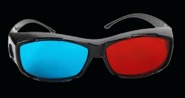

«Creo en la Naturaleza, y solamente en la Naturaleza (…) Creo que el Arte es, y no puede ser más que, la reproducción exacta de la Naturaleza (…) De modo que una industria que pudiera brindarnos un resultado idéntico a la Naturaleza sería el arte absoluto». «Puesto que la fotografía nos otorga todas las garantías de exactitud que pueden desearse, entonces fotografía y Arte son la misma cosa». Baudelaire
El mensaje basico de la fotografia 3d es hacernos tomar conciencia que naturalmente vemos en 3 dimensiones. estamos tan acostumbrados a ver la realidad en fotos y tv en 2 dimensiones, que nos sorprendemos cuando vemos una foto 3d impresa en papel. pero es simplemente eso, una foto mas real que nunca.
Sacco te regala lentes 3d para disfrutar estas fotografias en 3d.
La técnica 3d, aunque no lo parezca, es muy antigua, las primeras patentes datan de 1890. la técnica ha evolucionado y hoy se cuenta con varios sistemas de 3d.
Pero el único sistema que permite ver fotografías 3d, imprimirlas en papel, verlas en el monitor de una computadora o tv, paradójicamente, es el sistema mas antiguo, conocido como el anaglifo, de los lentes rojo y azul.
Somos una empresa de multimedia altamente calificada, con personal especializado para brindarle el mejor producto para su empresa.